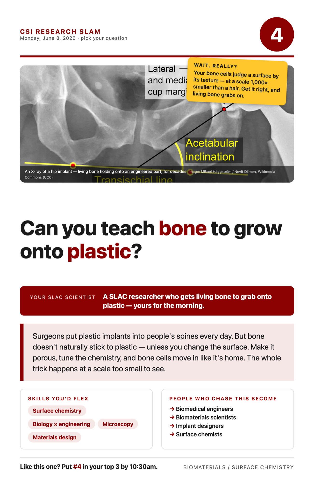

Your project · scroll down for the reading, video & math
Every year, surgeons fuse damaged spines using small implants called cages — spacers that hold vertebrae in place while bone grows through and locks everything together. Many cages are made of a remarkable plastic called PEEK: strong enough to live in a spine for decades, invisible to X-rays (so doctors can watch the healing around it), and — crucially — far closer to bone in stiffness than metal is. Titanium is much stiffer than bone, and that mismatch can weaken the surrounding bone over time (it's called stress shielding). PEEK flexes more like the real thing.
But PEEK has a problem: bone doesn't naturally stick to it. The body treats smooth plastic as a foreign object and wraps it in scar-like tissue instead of welding it in with new bone. An implant that never truly attaches can shift and loosen. The dream is osseointegration — living bone growing directly onto and into the implant, gripping it like a tree root grips rock.
The fix isn't changing the plastic — it's changing the surface. Bone cells "read" a surface at their own tiny scale — far smaller than a hair, down at the level of the cells themselves and the textures they can feel. Make PEEK porous — full of tiny connected holes, like the spongy inside of real bone — and tune its surface chemistry, and suddenly bone cells move in, anchor, and start building. In lab studies, porous PEEK roughly doubled the strength of the bone-implant grip versus smooth PEEK.
And here's the math of why pores matter so much: cut a cube into 1,000 mini-cubes and you get 10× the surface area from the same material — 10× more wall for bone cells to grab. (You'll do exactly that below.) Your scientist studied precisely this: how changing PEEK's surface chemistry and porosity convinces bone to call plastic home.
Wait, really? (steal these for your Wow Hunt)
- Bone cells judge a surface by textures far smaller than a hair — at their own cell-sized scale.
- Titanium is roughly 30× stiffer than PEEK — PEEK flexes much more like real bone.
- Porous PEEK ≈ 2× the holding strength of smooth PEEK in lab tests.
- Smooth implants get wrapped in scar tissue — the body's "return to sender."
Words you'll hear
PEEK — polyetheretherketone, a tough medical-grade plastic. Osseointegration — living bone bonding directly to an implant. Porosity — how full of tiny holes a material is; more pores = more surface for cells.